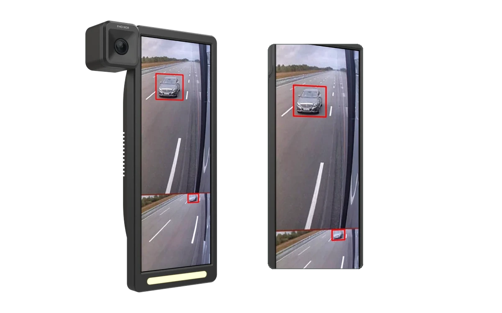

AI 卡車電子後視鏡
整合 Linux RKNN 推論軟體與雙視角顯示，配合產品工業與機構設計。

相機與顯示配置
雙視角影像與推論標記
01 / SCOPE
運算平台與模組劃分
本專案採用 Rockchip RK3588 運算平台運行 Debian 11 Linux 系統，搭配 12.3 吋顯示螢幕。工程實作聚焦邊緣 AI 軟體與外觀機構整合：軟體端開發基於 RKNN 的推論管線並與顯示端整合；機構端負責外殼造型、相機固定與內部散熱路徑配置。
02 / ARCHITECTURE
多執行緒擷取、推論與顯示架構
為維持行車畫面的即時流暢度，系統將影像顯示與 AI 推論拆解為多執行緒解耦架構：相機擷取後由顯示管線維持輸出，推論管線則非同步調用 NPU 進行物件辨識，並將辨識框座標疊加至雙視角畫布。
03 / IMPLEMENTATION
推論顯示與機構設計
推論與顯示整合
將目標辨識模型轉換為 RKNN 格式調用 NPU 加速，建立非同步影格交接流程，確保推論耗時不阻斷影像顯示串流。
工業與機構設計
針對駕駛艙視野規劃視角安裝結構，並於機身內部配置導熱元件，兼顧車載環境之抗震穩定性與散熱需求。
04 / VERIFICATION
問題與驗證
邊緣推論管線的穩定性與跨執行緒影格傳遞時序為排查重點。
已確認完成雙視角即時顯示與 RKNN NPU 目標標記框疊加之原型運作流程。跨執行緒時序延遲、推論效能與連續運作之詳細測試數據待補入。
05 / OUTCOME
整合邊緣 AI 與雙視角顯示的原型機
完成可實際運作之 AI 卡車電子後視鏡原型系統，整合工業外觀樣機、Linux RKNN 推論軟體與雙視角行車監控介面。